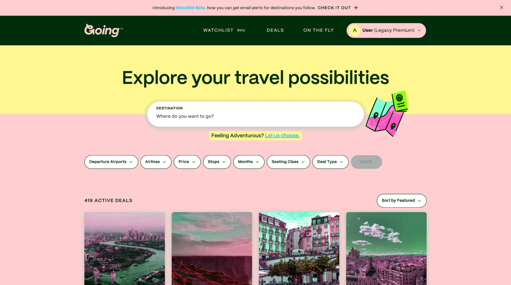
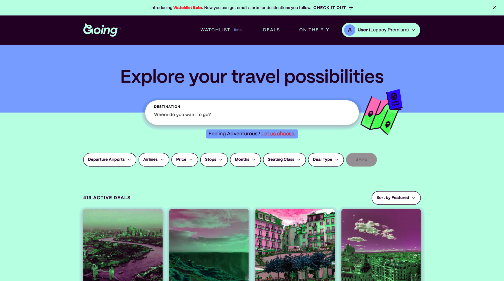
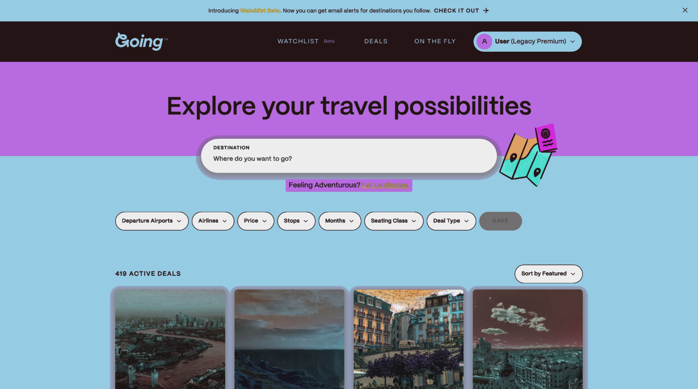
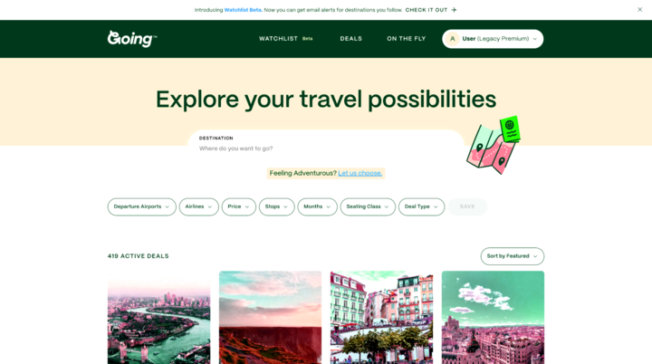

Main Content
This color scheme is made up primarily of multiple shades of green mixed with a light yellow. This fits a harmonious color combination, as green and yellow are next to each other on the color wheel. This scheme conveys stability and reasonableness, and with green and yellow being the primary colors of money, also a hint of budget-consciousness. The designers are hoping for you to feel safe and welcome to explore.
This color scheme is made up of red and yellow, which fits into one of the harmonious combinations that we discussed. This color scheme conveys a sense of urgency, pushing the user to move quickly. The yellow, on the other hand, doesn’t have the same level of meaning. This version is likely more of an impulse-buy style of website.
This color scheme is made up of different shades of blue and blueish green, which was not one of the color combinations discussed, and it’s pretty hard on the eyes. This scheme conveys calm and serenity, with ocean-like colors. This version is more of a website you’re supposed to take your time with, but it’s also really ugly.
This color scheme is made up of a medium purple and cool blue, which fits into one of the combinations we discussed because they are close on the color wheel but not touching. This scheme conveys calm and contentedness, with the stereotypical “royalty” associations of purple with a chill blue. The designers want you to feel upper-class and stable.
This color scheme is made up of beige and white with green top bar. This doesn’t really fit into one of the discussed combinations, but it isn’t all that ugly either. It’s more just plain and boring. Beige gives the sense of stability, but in the drab-office sense. The designers would want you to feel.. nothing. At least nothing strong.
Which I prefer
I'm defining effective as fitting the needs and ideals of the website The most effective color scheme is the first one, the original. The website the screenshot is from is a deal-focused flight website, and the first color scheme matches all of those values perfectly. A welcoming environment with reminders of money is extremely effective for the purposes of that website.